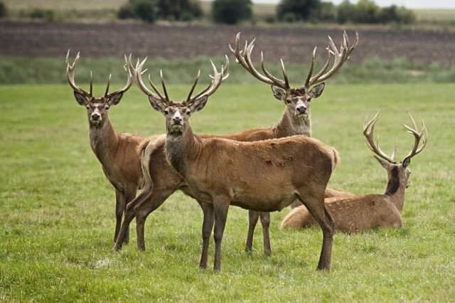
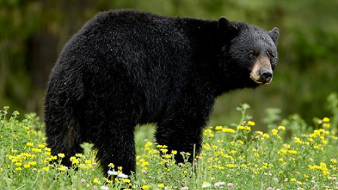
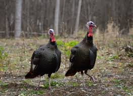

Game
-
Deer
- Deer have a gestation period of 7 months and give birth to an avg of two fawn annually
- In the early morning deer feed on leaves,flowers,berries,bark, twigs,acorns,and more
- Deer are the most popular animals for hunting in NYS
-
Bear
- Bears have a gestation period of around 220 days. they can give birth to up to four cubs.
- Food sources include grasses, roots, berries, fish, and other mammals,
-
Turkey
- Turkey gestation period is 28 days and they lay, once a year, between 4 and 17 eggs
- Smaller turkeys are called Jakes, larger turkeys are called Gobblers
- Turkey is a low fat source of protein
-
Small Game, Rabbit, and Squirel
- Rabbits produce an average of 6 babies in a litter and can mate up to once per month!
- Hay, grasses and leafy greens are the staple of a rabbits diet, in the iwnter the eat twigs buds and bark
- Squirrels breed twice per year and can have up to 8 offspring per year


